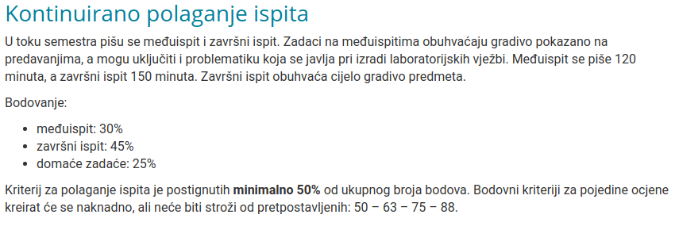

Emma63194 Nvm, mislio sam da su to promijenili ove godine, štoviše bio sam uvjeren da sam to vidio u novom predavanju, ali nije slučaj
Ispravit ću netočan navod
EDIT: Našao sam zašto sam to mislio, gle ovo

(https://www.fer.unizg.hr/predmet/apr/kz)
Po ovome je prag 50% na MI + ZI, tj trebaš 37.5 bodova iz sume to dvoje po tome što piše na netu. Ili možda 50% iz pojedinačnog ispita. Možda su samo htjeli reći da ispite nisi položio ako imaš manje od 50 bodova ukupno, ali to se čini redundantno. Ništa od ovog nije u uvodnom predavanju pa ne znam što misliti.